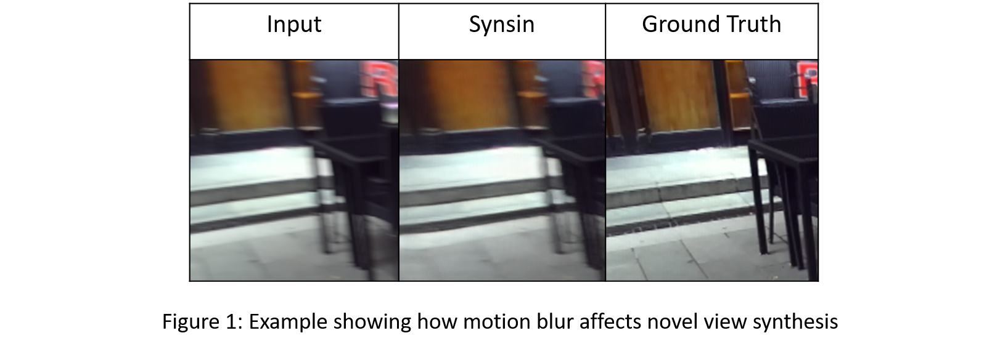

Overview:
Novel view synthesis is a popular topic which focuses on understanding how the 3D world space would look in the different camera viewpont given a single/set of input images.
Several dataset have been introduced recently for this particular task[1,
2]. However, all these datasets were curated carefully so that there are minimal artifacts such as
motion blur [1]. Although this ensures better learning opportunity for a model, this can limit the extend of practical usability of existing novel view synthesis mechanism,
especially if we want to deploy it for a handheld camera. Figure 1 shows such an example where the current state-of-the-art
novel view synthesis architecture [3]
generates blurry output given a severely blurred input.

In this study, our focus is to minimize the affects of motion blur on novel view synthesis. We aim to utilize image deblurring mechanism together
with novel view synthesis to make a robust architecture that can withstand these artifacts.
Experiment: For our experiments, we work on the recent architectures proposed by Wiles et al.[3] and Zhang et al.[4]. We mention them as Synsin and DMPHN heneceforth. Synsin uses neural rendering mechanism to re-project image features into a 3D space and transform into novel views. The whole process is end-to-end and differentiable. On the other hand, DMPHN uses a hierarchical multi-patch network architecture which can work in real-time. We modify their source code to integrate together. We run our experiments using Stereo Blur Dataset. The reasons of working on this dataset are - 1) Unlike rest of the datasets available for novel view synthesis, Stereo blur dataset contains both blurred and ground truth information on a particular timestamp and a particular camera position. 2) The two separate views are captured at the same timestamp, which ensures the views are static with respect to one another. 3) The dataset contains a wide variety of outdoor and indoor scenes.
As neither of Synsin and DMPHN are trained on Stereo Blur Dataset before, we run the following experiments :
Conclusions: This is a work in progress. Currently, We are working on how to improve performance of our final architecture.